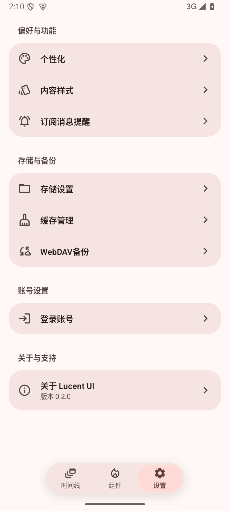
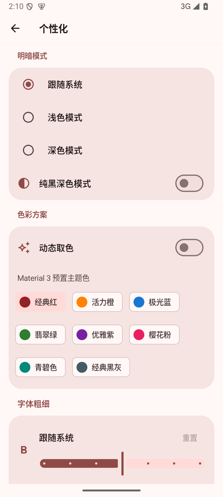
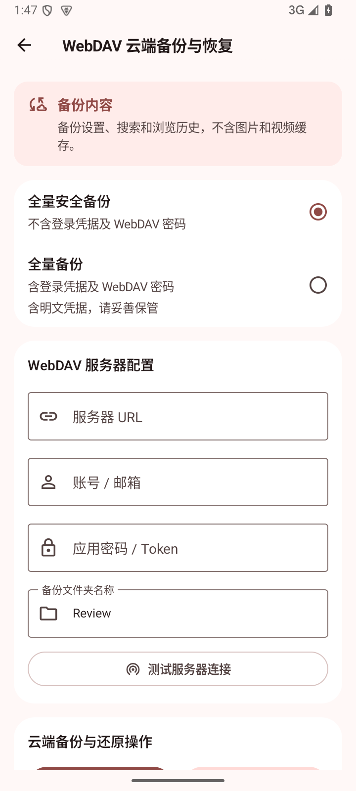
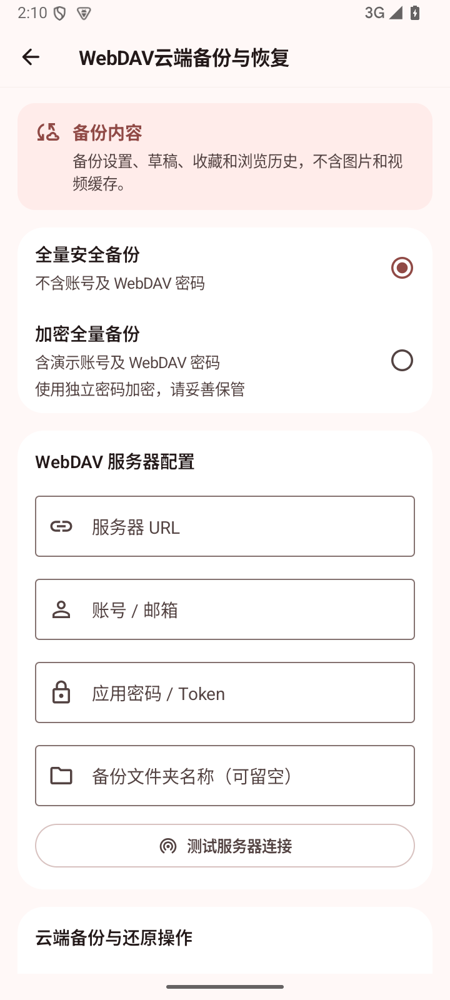
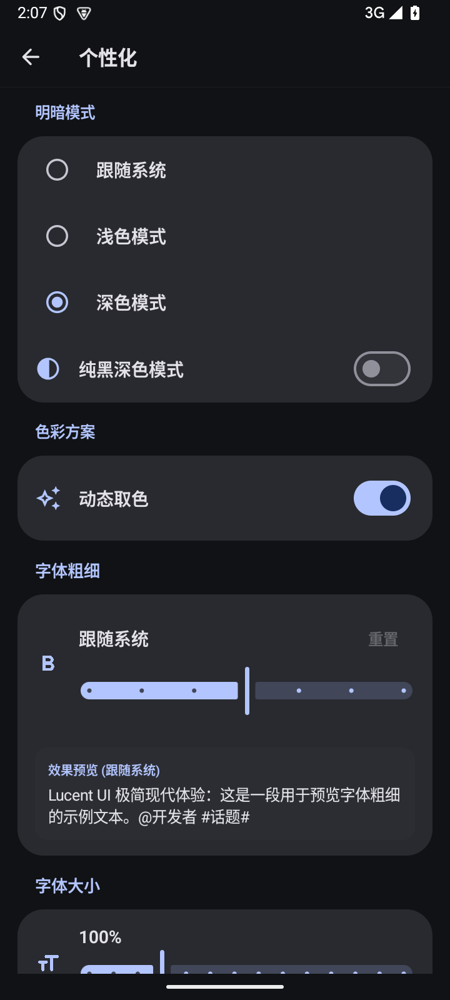

Review → Lucent UI
同一台 Android 15 模拟器，720×1600，默认100%字号。这里展示真实安装包画面，左侧为Review，右侧为锚定重做后的Demo。
设置/个性化沿用Review真实组件。名称和业务文案允许不同；WebDAV继续使用独立密码加密，保留额外密码输入。动态色取决于设备壁纸。图库、视频和评论使用本地示例内容；尚未登录真实Review账号对照这些业务内容。
设置首页
Review 3.17.5Lucent UI 0.2.0
个性化
Review 3.17.5Lucent UI 0.2.0
WebDAV
Review 3.17.5
Lucent UI 0.2.0
动态取色 · 深色个性化
Review 3.17.5Lucent UI 0.2.0